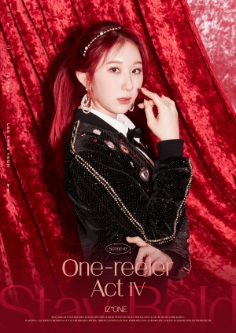

Member Profile
Eunbi
- Name/Nama: Kwon Eun Bi (권은비)
- Hanja: 權恩妃 (Quan En Fei)
- Position/Posisi: Leader, Main Dancer, Lead Vocalist
- Birthday/Ulang Tahun: September 27, 1995
- Zodiac Sign/ Zodiak: Libra
- Height/Tinggi: 160 cm (5’3”)
- Weight/Berat Badan: 46 kg (101 lbs)
- Blood Type/ Gol. Darah: A
Sakura
- Name/Nama: Miyawaki Sakura (宮脇 咲良) (みやわき さくら) (미야와키 사쿠라)
- Position/Posisi: Sub Vocalist, Sub Rapper, Visual
- Birthday/Ulang Tahun: March 19, 1998
- Zodiac Sign/ Zodiak: Pisces
- Height/Tinggi: 163 cm (5’4”)
- Weight/Berat Badan: 43 kg (94 lbs)
- Blood Type/ Gol. Darah: A
Hyewon
- Name/Nama: Kang Hye Won (강혜원)
- Hanja: 姜惠元 (Jiang Hui Yun)
- Position/Posisi: Lead Rapper, Sub Vocalist, Visual
- Birthday/Ulang Tahun: July 5, 1999
- Zodiac Sign/ Zodiak: Cancer
- Height/Tinggi: 163 cm (5’4”)
- Weight/Berat Badan: 43 kg (95 lbs)
- Blood Type/ Gol. Darah: B
Yena
- Name: Choi Ye Na (최예나)
- Hanja: 崔叡娜 (Cui Rui Na)
- Position: Main Rapper, Lead Vocalist, Lead Dancer
- Birthday: September 29, 1999
- Zodiac Sign: Libra
- Height: 162 cm (5’3”)
- Weight: 45 kg (99 lbs)
- Blood Type: A
Chaeyeon

- Name/Nama: Lee Chae Yeon (이채연)
- Hanja: 李彩讌 (Li Cai Yan)
- Position/Posisi: Main Dancer, Lead Vocalist, Lead Rapper
- Birthday/Ulang Tahun: January 11, 2000
- Zodiac Sign/ Zodiak: Capricorn
- Height/Tinggi: 165 cm (5’5″)
- Weight/Berat Badan: 47 kg (104 lbs)
- Blood Type/ Gol. Darah: A
Chaewon
- Name/Nama: Kim Chae Won (김채원)
- Hanja: 金采源 (Jin Cui Yuan)
- Position/Posisi: Lead Vocalist, Lead Dancer
- Birthday/Ulang Tahun: August 1, 2000
- Zodiac Sign/ Zodiak: Leo
- Height/Tinggi: 163cm (5’3″)
- Weight/Berat Badan: 42kg(92 lbs)
- Blood Type/ Gol. Darah: B
Minju
- Name/Nama: Kim Min Ju (김민주)
- Hanja: 金玟周 (Jin Wen Zhou)
- Position/Posisi: Lead Rapper, Sub Vocalist, Visual
- Birthday/Ulang Tahun: February 5, 2001
- Zodiac Sign/ Zodiak: Aquarius
- Height/Tinggi: 163.8 cm (5’4″)
- Weight/Berat Badan: 45 kg (99lbs)
- Blood Type/ Gol. Darah: AB
Nako
- Name/Nama: Yabuki Nako (矢吹奈子) (やぶき なこ) (야부키 나코)
- Position/Posisi: Sub Vocalist
- Birthday/Ulang Tahun: June 18, 2001
- Zodiac Sign/ Zodiak: Gemini
- Height/Tinggi: 150 cm (4’11”)
- Weight/Berat Badan: 40 kg (88 lbs)
- Blood Type/ Gol. Darah: n/a
Hitomi
- Name/Nama: Honda Hitomi (本田仁美) (ほんだ ひとみ) (혼다 히토미)
- Position/Posisi: Lead Dancer, Sub Vocalist, Sub Rapper
- Birthday/Ulang Tahun: October 6, 2001
- Zodiac Sign/ Zodiak: Libra
- Height/Tinggi: 158 cm (5’2”)
- Weight/Berat Badan: 44.4 kg (98 lbs)
- Blood Type/ Gol. Darah: A
Yuri
- Name/Nama: Jo Yu Ri (조유리)
- Position/Posisi: Main Vocalist
- Birthday/Ulang Tahun: October 22, 2001
- Zodiac Sign/ Zodiak: Libra
- Height/Tinggi: 162 cm (5’4″)
- Weight/Berat Badan: 45 kg (99 lbs)
- Blood Type/ Gol. Darah: AB
Yujin
- Name/Nama: An Yu Jin (안유진)
- Hanja: 安兪真 (An Yu Zhen)
- Position/Posisi: Lead Vocalist, Lead Dancer
- Birthday/Ulang Tahun: September 1, 2003
- Zodiac Sign/ Zodiak: Virgo
- Height/Tinggi: 170 cm (5’7″)
- Weight/Berat Badan: 48 kg (106 lbs)
- Blood Type/ Gol. Darah: A
Wonyoung
- Name/Nama: Jang Won Young (장원영)
- Hanja: 張員瑛 (Zhang Yuan Ying)
- Position/Posisi: Lead Dancer, Sub Vocalist, Sub Rapper, Center, Maknae
- Birthday/Ulang Tahun: August 31, 2004
- Zodiac Sign/ Zodiak: Virgo
- Height/Tinggi: 171 cm (5’7″)
- Weight/Berat Badan: 47 kg (104 lbs)
- Blood Type/ Gol. Darah: O